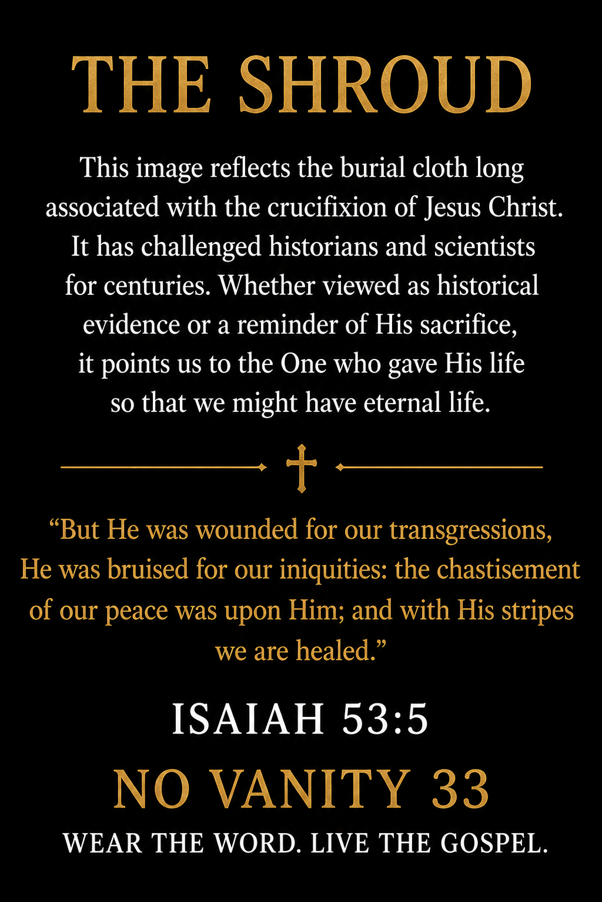

Shop Our Collections
Featured Products
📖Learn More →
Every Product Can Lead Back to the Bible
Scan a product QR code to open the Bible account tied to that design.
 NO VANITY 33WEAR THE WORD. LIVE THE GOSPEL.🛒 Cart (0)
NO VANITY 33WEAR THE WORD. LIVE THE GOSPEL.🛒 Cart (0)
No Vanity 33 Flagship Release
One Image. One Savior. One Conversation.
Inspired by the burial cloth long associated with the crucifixion of Jesus Christ, this premium tee points beyond the mystery and toward the Gospel: Christ died, was buried, and rose again.
Printed on demand • Sizes S–3XL • Front and back artwork
The Flagship Release
Wear a design that opens the door to a deeper conversation.

$37.00
Created to point hearts toward the sacrifice and resurrection of Jesus Christ. The front carries the Shroud-inspired image; the back shares its meaning alongside Isaiah 53:5.
Secure checkout through Stripe. Production and shipping begin after your order is placed.
The Meaning Behind the Design
The Shroud has challenged historians, scientists, and believers for centuries. People hold different conclusions about its history, but this design has one clear purpose: to point toward Jesus Christ and the hope of the resurrection.
“But He was wounded for our transgressions, He was bruised for our iniquities: the chastisement of our peace was upon Him; and with His stripes we are healed.”Isaiah 53:5
Wear the Word. Live the Gospel. Spread the Word.
Shop Our Collections
Scan a product QR code to open the Bible account tied to that design.